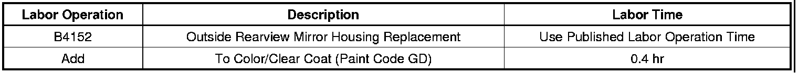

Body - Outside Rearview Mirror Housing Availability
INFORMATIONBulletin No.: 09-08-64-018A
Date: March 26, 2010
Subject: Outside Rearview Mirror Housing Available for Service
Models:
2007-2010 Cadillac Escalade, Escalade ESV, Escalade EXT
2007-2010 Chevrolet Avalanche, Silverado, Suburban, Tahoe
2007-2010 GMC Sierra, Yukon, Yukon Denali, Yukon XL, Yukon Denali XL
Supercede:
This bulletin is being revised to add the 2010 model year. Please discard Corporate Bulletin Number 09-08-64-018 (Section 08 - Body and Accessories).
The outside rearview mirror housing is available for service as a separate part. DO NOT replace the outside rearview mirror assembly if the housing requires replacement. Please refer to the Outside Rearview Mirror Housing Replacement procedure in the Mirrors sub-section of the Service Information (SI).
Parts Information
For part number and usage, see Mirrors/Exterior in Group 16.000 of the appropriate Parts Catalog.
Warranty Information

For vehicles repaired under warranty, use the table above.

Disclaimer